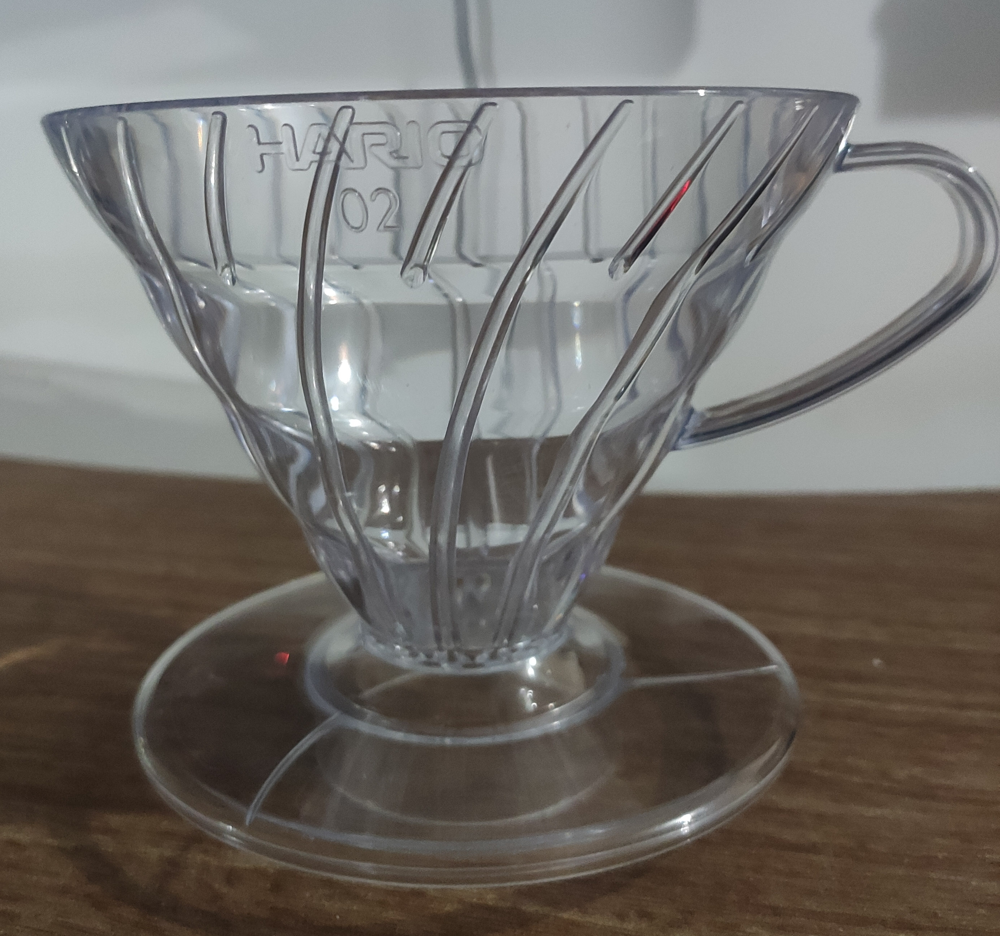

Filtered V60

The Hario staple
This is probably the first step
in the world of specialty coffee.
And is really easy make some delicious
coffee.
Equipments
- V60 dripper
- V60 filter
- Scale at least to .1 of a gram
- Water boiling device
- Some receptacle for the coffee
Ingredients
- Freshly roasted coffee beans
Steps
- Weight 7.5g of coffee grounds
per 100g of water
- Boil the water
- Rinse the paper filter mounted
on the dripper with the boiled water
- Put the grounded coffee on the
dripper (and the set on the receptacle
- Start pouring over:
- Blooming: pour double the
weight of the grounded coffee
and wait 30-45 seconds
- First pour: half of the desired
final volume
- The rest of the volume:
divide in three equals pours
- Drink the coffee: it seems obvious
but it is REALLY important. Make every
adjustment in your process based on taste,
not on anything else